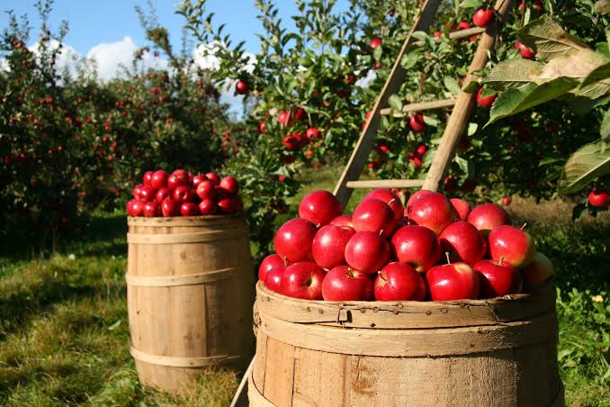

RAINWaiting for data
TARIMYOL · FIELD MANAGEMENTNASA POWER DATA
A smarter
roadmap for your farm.
Understand your soil and plan the season with confidence. Turn location-specific climate and soil data into a practical plan from planting through harvest.
 FIELD CROPS
Field CropsA guide to cereals, food legumes, and industrial crops.
Explore crops
FIELD CROPS
Field CropsA guide to cereals, food legumes, and industrial crops.
Explore crops

FRUIT & VINES Fruit & ViticultureA guide to fruit trees, nuts, citrus, and grape production. Explore crops VEGETABLE PRODUCTION
Vegetable CropsField and greenhouse vegetables, transplanting, and harvest windows.
Explore crops
VEGETABLE PRODUCTION
Vegetable CropsField and greenhouse vegetables, transplanting, and harvest windows.
Explore crops
 HERBS & WELLNESS
Medicinal PlantsA guide to sage, St. John's wort, echinacea, and other medicinal species.
Explore crops
HERBS & WELLNESS
Medicinal PlantsA guide to sage, St. John's wort, echinacea, and other medicinal species.
Explore crops
 ESSENTIAL OILS & SPICES
Aromatic PlantsEssential oil and spice crops such as lavender, thyme, rosemary, and mint.
Explore crops
ESSENTIAL OILS & SPICES
Aromatic PlantsEssential oil and spice crops such as lavender, thyme, rosemary, and mint.
Explore crops
 KABA YEM & MERA
Forage CropsProtein-rich forage such as alfalfa, sainfoin, and vetch.
Explore crops
KABA YEM & MERA
Forage CropsProtein-rich forage such as alfalfa, sainfoin, and vetch.
Explore crops
Plan, monitor, and act at the right time.
All your field tools in one workspace, from seasonal planning and parcel mapping to weather-informed spraying guidance.
01 / TARLAN
Bilgileri gir
♧
02 / YOUR ANALYSISYour seasonal plan
will appear here.
Enter your field details and we'll prepare a tailored plan using NASA POWER climate data for your location.
✳NASA POWERDaily weather and solar data
02 / PARCEL & SPRAYING
Monitor your parcel and plan spraying
Mark your parcel boundary on the map, choose a date range, and request NDVI from NASA AppEEARS. The latest period's mean colors the parcel; mean, minimum, and maximum values are listed below.
Loading map...
Find by location or parcel numberSearch by place name or enter the official province, district, neighborhood, block, and parcel details
Select a province, district, and neighborhood, then enter the block and parcel numbers.
Low NDVI Medium HighUse the map controls at the upper right to toggle NDVI, EVI, SMAP soil moisture, LST surface temperature, and SRTM elevation layers.
YOUR FIELD · 5 DATA LAYERS
See your field from different perspectives
All five maps follow the same field location. Drag a map to explore the area, or open a layer on the main map.
Waiting for field location
Vegetation · NDVI
MODIS Terra · 8-dayVegetation vigor · EVI
MODIS Terra · 8-daySoil moisture · SMAP
NASA SMAP · surfaceSurface temperature · LST
MODIS Terra · daytimeElevation · SRTM
NASA SRTM · terrainBase map © OpenStreetMap contributors · Satellite layers from NASA GIBS. Data is regional in scale and may not show variation within small parcels; results depend on acquisition date and pixel resolution.
The token is sent to NASA only from the local server.
A valid AppEEARS token is required for NASA/AppEEARS requests and must be refreshed about every 48 hours. MODIS pixels are 250 m wide and may include neighboring areas for small parcels. Parcel drawings are stored in this browser.
Crop Species and Growing Guide
Choose a crop to explore planting and harvest windows and detailed growing guidance.
FIELD CROPS
Field CropsCrop profiles for cereals, legumes, and industrial crops.
Explore crops
FRUIT & VINES
Fruit & ViticultureA guide to fruit trees, nuts, and grape production.
Explore crops
VEGETABLE PRODUCTION
Vegetable CropsField and greenhouse vegetables, planting, and harvest windows.
Explore crops
HERBS & WELLNESS
Medicinal PlantsSage, St. John's wort, echinacea, and other medicinal species.
Explore crops
ESSENTIAL OILS & SPICES
Aromatic PlantsEssential-oil and spice crops such as lavender, thyme, rosemary, and mint.
Explore crops
KABA YEM & MERA
Forage CropsProtein-rich forage such as alfalfa, sainfoin, and vetch.
Explore crops
AGRICULTURE
Field Crops 16 crops
Cereals, food legumes, industrial crops, and forage crops
Regional growing conditions for field crops
Field crops are grown across large agricultural areas and provide essential products for food, animal feed, and industry. This group includes cereals, legumes, industrial crops, and forage crops. Many are annuals grown from seed; potatoes are propagated from tubers, while forage crops such as alfalfa and sainfoin may be perennial.
Türkiye's varied climate and soils support a wide range of field crops. The tables below organize cereals, food legumes, industrial crops, and forage crops by their growing requirements and major production regions. Regional guidance is general; district, elevation, cultivar, planting date, water supply, and soil tests may change the best choice.
A. Cereals · Cool- and warm-season crops
| Crop | Favorable climate and soil conditions | Major regions in Türkiye |
|---|---|---|
| Wheat | Cool, moist conditions during growth, followed by warm, dry continental weather for ripening. | Central Anatolia, Thrace (Marmara), and Southeastern Anatolia. |
| Barley | More tolerant of cold, drought, and salinity than wheat; matures earlier. | Central Anatolia, Eastern Anatolia, and Southeastern Anatolia. |
| Corn | Needs warm, sunny, humid conditions and has high water demand. | Black Sea region (rainfed), Mediterranean and Aegean regions (irrigated). |
| Rice | Grown in warm conditions in level, water-retentive fields from establishment through harvest. | Marmara (Edirne / Ergene Basin) and the Black Sea region (Samsun). |
| Oats | Adapted to cool, moist growing conditions. | Marmara and the Black Sea region. |
| Rye | More tolerant than other cereals of cold and low-fertility soils. | Central Anatolia and cold, high-elevation areas. |
B. Food legumes
| Crop | Favorable climate and soil conditions | Major regions in Türkiye |
|---|---|---|
| Red lentil | Among the legumes adapted to heat and severe drought. | Southeastern Anatolia. |
| Green lentil | More tolerant of cool conditions than red lentil. | Central Anatolia, especially Yozgat, Çorum, and Kırşehir. |
| Chickpea | A semi-arid crop that tolerates heat and can grow in relatively poor soils. | Central Anatolia, the Aegean, and Southeastern Anatolia. |
| Dry bean | Needs a mild growing season with regular rainfall or irrigation. | Central Anatolia (irrigated production), the Black Sea region, and Eastern Anatolia. |
C. Industrial crops
| Crop | Favorable climate and soil conditions | Major regions in Türkiye |
|---|---|---|
| Cotton | Needs a long, sunny, hot growing season and abundant water during boll formation. | Southeastern Anatolia, the Aegean, and Çukurova. |
| Sunflower | Needs adequate water during growth and plenty of sunshine during flowering and ripening. | Marmara (Thrace), Central Anatolia, and the Black Sea region. |
| Sugar beet | Needs a cool-to-mild climate, sufficient water, and a day–night temperature range. | Central Anatolia (Konya, Eskişehir) and Eastern Anatolia. |
| Tobacco | Adapted to mild conditions; leaf quality may improve in dryland, lower-humus soils. Requirements vary by cultivar and end use. | Aegean and Black Sea regions. |
| Potato (tuber) | Prefers a cool climate, loose sandy loam, and consistent water. | Central Anatolia (Niğde, Nevşehir) and the Aegean (Ödemiş). |
D. Forage crops
| Crop | Favorable climate and soil conditions | Major regions in Türkiye |
|---|---|---|
| Alfalfa | Prefers warm conditions and develops deep roots; regular irrigation supports high yields. | Central Anatolia, the Aegean, and Eastern Anatolia. |
| Sainfoin | More tolerant than alfalfa of calcareous, poor, dry, and marginal soils. | Central and Eastern Anatolia. |
| Vetch | Grows well in cool climates with adequate rainfall. | Central Anatolia, the Black Sea region, and Marmara. |
Source: The user-provided Field Crops Guide.pdf and accompanying cultivation notes. Information is organized into four groups. Regional and climate guidance is general; confirm local recommendations, current water availability, and soil test results before planting.
Plant communities beyond farmland
Plants in forests, pastures, wetlands, and steppes support water, soils, and biodiversity as well as providing economic value.
Forests and Industrial Trees

Overview and uses: Forest trees support natural habitats, carbon storage, the water cycle, and soil conservation; they also provide timber, paper, resin, and biomass.
Life cycle and reproduction: Pine, spruce, cedar, oak, and beech are perennial woody plants. They are usually propagated from seed; some species, such as poplar, can also be propagated by cuttings. They develop deep roots and woody trunks.
Climate and examples: Spruce and beech favor cool, moist sites, while Turkish red pine and some oaks tolerate warmer, drier areas. Consider soil depth, drainage, fire, and drought risk. Examples include Turkish red pine, black pine, Scots pine, cedar, spruce, oak, beech, and poplar.
Natural Meadow and Pasture Plants

Overview and uses: Meadows and pastures provide livestock forage, habitat for wildlife, erosion control, and rainfall infiltration. Meadows are generally cut for hay, while pastures are grazed.
Life cycle and reproduction: Perennial grasses and legumes are common. Bunchgrasses, rhizomatous couch grasses, and tap-rooted alfalfa or sainfoin regenerate from seed, tillers, or underground shoots.
Climate and examples: Rainfall, elevation, temperature, soil depth, and grazing pressure shape plant communities. Depending on local conditions, examples include fescue, couch grass, meadow foxtail, clover, alfalfa, sainfoin, and Astragalus. Overgrazing weakens plant cover; resting and rotational grazing support recovery.
Water and Wetland Plants (Aquatic Plants)

Overview and uses: Plants in water or saturated soils reduce shoreline erosion, retain nutrients, and provide habitat for aquatic life and birds.
Life cycle and reproduction: Reeds and cattails anchor in mud while their stems extend above the water. Water lilies have floating leaves, and duckweed floats freely. Air-filled tissues help transport oxygen. These plants spread by seed, rhizomes, and plant fragments.
Climate and examples: Water depth, flow, light, temperature, and salinity determine which species can grow. Examples include common reed (Phragmites), cattail (Typha), water lily, and duckweed. Favor native species in wetlands and never release invasive plants into the wild.
Türkiye's Endemic Plants

Overview and uses: Endemic species occur naturally only in a specific geographic area. Türkiye's varied climate and geology support species found nowhere else. Endemism alone does not mean a species is threatened.
Life cycle and reproduction: This group includes annual herbs, perennial bulb plants, shrubs, and trees. Most reproduce by seed; some use bulbs, rhizomes, or tubers. Collecting plants from the wild can harm populations with limited ranges.
Climate and examples: Species adapted to mountains, steppe, and specialized geological substrates have distinct needs; protect their local habitats. Examples include Ankara crocus (Crocus ancyrensis), Eber yellow (Thermopsis turcica), love flower (Centaurea tchihatcheffii), Kasnak oak (Quercus vulcanica), and Kazdağı fir (Abies equi-trojani).
Weeds (Weed Science)

Overview and uses: Weed science examines weeds and their relationship to agriculture. A plant unwanted in a field may provide pollen, nectar, and ground cover in another habitat; in crops, it can compete for water, light, and nutrients.
Life cycle and reproduction: Annual species may build a persistent seed bank; couch grass and johnsongrass spread by rhizomes, while field bindweed spreads by root shoots. Seeds and plant fragments can be carried by wind, water, animals, or farm machinery.
Climate and examples: Germination depends on temperature, moisture, light, and soil disturbance. Common examples include wild oat, foxtail, poppy, lamb's quarters, johnsongrass, couch grass, and field bindweed. Management can include rotation, clean seed, and mechanical or cultural methods; herbicide decisions should follow correct identification and registered product labels.
Exotic Plants and Extreme Environments

Overview and uses: This is not a formal botanical class; it groups unusual adaptations found in carnivorous, parasitic, and desert plants. An exotic species grows outside its native range and may become invasive if released into the wild.
Life cycle and reproduction: Venus flytraps photosynthesize and obtain minerals from insects. Dodder and broomrape draw resources from host plants; cacti and succulents store water in stems or leaves. Reproduction by seed, offsets, cuttings, or bulbs varies by species.
Climate and examples: Carnivorous wetland plants such as Venus flytraps need sunny, consistently moist, acidic, nutrient-poor conditions; desert cacti need sun and rapid drainage. Examples include Dionaea, Drosera, Nepenthes, dodder, broomrape, mistletoe, cacti, and agave. Consider the natural habitat and needs of each species.
FRUIT & VITICULTURE
Fruit and Viticulture 15 crops
A guide to fruit trees, nuts, citrus, and grape production

Fruit Production
Overview and uses: Fruit trees and shrubs are grown for fresh markets, drying, juice, and food processing. Orchards can also support pollinators and agricultural landscapes.
Life cycle and propagation: Fruit trees are perennial and woody. Seedlings can be raised from seed; grafting onto rootstocks is commonly used to preserve cultivars. Canopy shape, pruning, and pollinizer cultivars affect yield and quality.
Climate and examples: Apples, pears, and cherries need winter chill, while citrus is frost-sensitive. Deep, well-drained loam and irrigation suited to the species are preferred. Examples include apple, apricot, cherry, olive, walnut, and citrus.
Vegetable Production

Overview and uses: Vegetables are eaten fresh or preserved by canning, freezing, or drying. They can be grown in open fields or under cover; choose cultivars according to intended use and harvest timing.
Life cycle and propagation: Tomatoes, peppers, beans, and squash are usually grown as annuals. Some crops, such as cabbage and carrots, follow a two-year cycle for seed production. Propagation by seed, seedling, tuber, or bulb depends on the crop; roots may be taproots or fibrous.
Climate and examples: Tomatoes, peppers, and cucumbers prefer warm conditions; peas, spinach, and lettuce prefer cooler weather. Most vegetables benefit from sunny sites and fertile, well-drained soil with adequate organic matter. Examples include tomato, pepper, bean, potato, onion, cabbage, and squash.
Viticulture
Overview and uses: Grapevines are grown for table grapes, raisins, molasses, and juice. Viticulture requires a perennial planting and long-term canopy and training management.
Life cycle and propagation: Grapevines are perennial woody climbers. They are propagated from cuttings or grafted vines; training systems, pruning, and vine spacing depend on cultivar and mechanization.
Climate and examples: Sunny, long growing seasons support grape ripening; waterlogging can damage roots. Consider soil drainage, calcareous conditions, and salinity tolerance for the rootstock and cultivar. Table, raisin, and wine grapes are grown.
Ornamental Plants

Overview and uses: Ornamental plants are grown for gardens, parks, and interiors, as well as for cut flowers, containers, and landscaping. Choosing locally adapted species can reduce urban water use and provide resources for pollinators.
Life cycle and propagation: This group includes annual flowers, perennial herbs, bulbs, woody shrubs, and trees. Depending on the species, they are propagated by seed, cuttings, grafting, bulbs, or tubers.
Climate and examples: Sun and water needs vary by species; good drainage is important for the root health of many container plants. Common examples include roses, tulips, hyacinths, chrysanthemums, geraniums, and seasonal petunias.
Medicinal and Aromatic Plants

Overview and uses: Plants valued for essential oils, aroma, or flavor are used in spices, foods, cosmetics, and perfumery. Traditional use does not establish a safe dose or proven treatment effect; correct species identification is essential.
Life cycle and propagation: Chamomile and coriander are annuals; lavender, thyme, sage, mint, and rosemary are mostly perennials. In addition to seed, plants may be propagated by cuttings or division; aromatic glands in leaves and flowers produce their scent.
Climate and examples: Lavender, thyme, and sage suit sunny, warm, calcareous, well-drained sites; mint prefers moister, organic-rich soil. Examples include thyme, lavender, sage, mint, rosemary, lemon balm, chamomile, anise, and cumin.
VEGETABLE PRODUCTION
Vegetable Crops 8 crops
Field and greenhouse vegetables for fresh markets and processing
HERBAL PRODUCTS & WELLNESS
Medicinal Plants 6 crops
Plants used in pharmaceuticals, herbal products, teas, and wellness products
ESSENTIAL OILS & SPICES
Aromatic Plants 6 crops
Crops for cosmetics, perfumery, spices, and essential-oil production
FORAGE & PASTURE
Forage Crops 5 crops
Protein-rich forage and silage crops for beef and dairy production